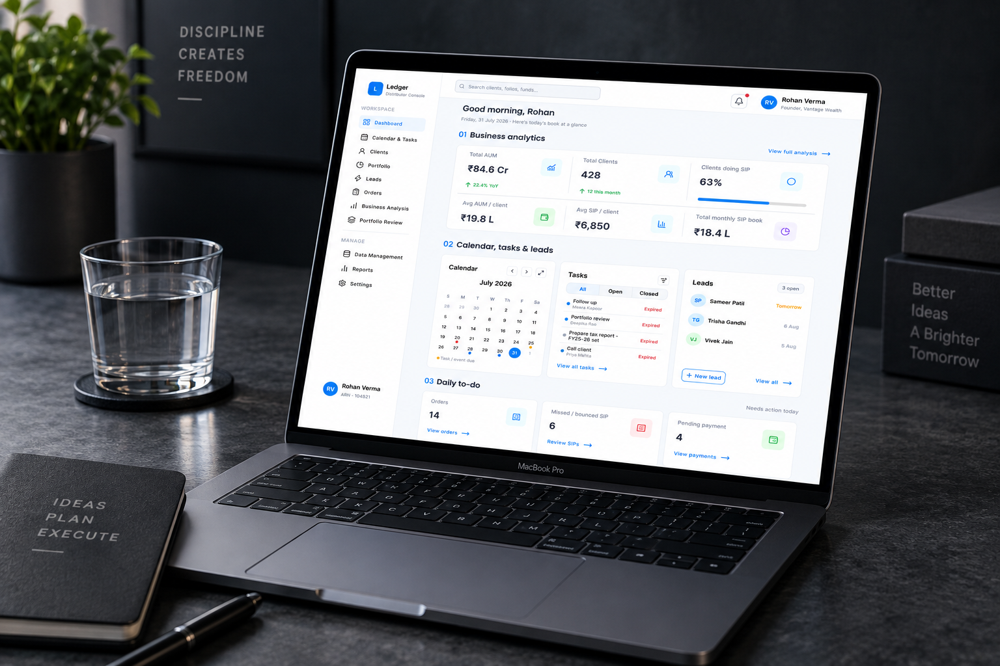

A wealth management dashboard designed to give advisors a clear view of business analytics, client activity, tasks, leads, and portfolio operations in one focused workspace.

Designed a focused wealth management workspace that brings business analytics, client information, calendar tasks, leads, orders, and portfolio review into a clear dashboard experience.
Wealth management teams need to move between important client and portfolio activities quickly. Scattered information and competing priorities can make daily review harder than it needs to be.
Structured approach from workflow insight to interface
Understand advisor workflows
Priorities, data & IA
Dashboard layouts & hierarchy
High-fidelity wealth workspace
Clarity & workflow review